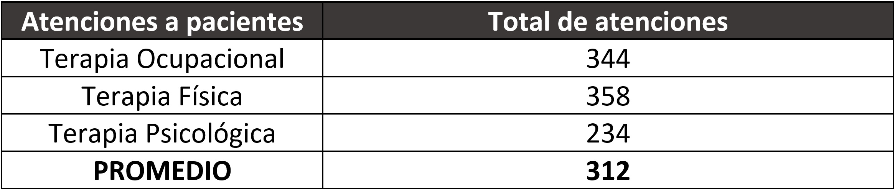

Prevalencia de Anemia en Madres Gestantes.
La Tabla N°4 nos presenta una información detallada de la prevalencia de anemia ya que se enfoca en cada provincia de nuestro país. El mayor porcentaje de madres gestantes con anemia se encuentran ubicadas en la región de Puno (42.8%), del cual el 44,2% se considera un problema moderado y el 47,1% se considera un problema grave, hablando de los 104 distritos evaluados. Asimismo, presenta una cantidad considerable de madres gestantes evaluadas, el cual es de 12 573, encontrando 5 381 casos, siendo únicamente superado por los 13 999 de Lima. Sin embargo, debemos considerar que en Lima se realizó una evaluación considerablemente mayor, de 74 763 y al traducirlo en porcentaje, representa un 18,7%. Se evaluaron 130 distritos en esta ciudad, donde 35 distritos presentan un problema de salud pública moderado (26,9%) y 38 un problema grave (29,2%).
Inmediatamente al lado de este cuadro, podemos encontrar una distribución por zonas urbanas y rurales, sin embargo, este carece de mucha información por lo que únicamente podemos concluir que los casos en zonas rurales superan a los de zonas urbanas en una proporción de 159 a 44 [19].

Hemos extraído información del banco mundial sobre la prevalencia de anemia en mujeres embarazadas en el 2016 de la mayoría de los países del mundo. El país que más prevalencia presenta es la Republica del Yemen con un 63%, y el que menos es Estados Unidos con un 16%. La prevalencia de anemia se concentra mayormente en los países africanos, le siguen los países asiáticos y finalmente los latinos y europeos. En cuanto a la data mundial, Perú se encuentra por debajo con un 26%, estando a la par con países latinos como Ecuador y Nicaragua. Por encima de todos los países latinos, se encuentra Haití con un 50% y por debajo de todo, México con un 20%. Si realizamos una media, nos da un resultado de 27,75% estando Perú con apenas un 1,75% por debajo de esta. [20]